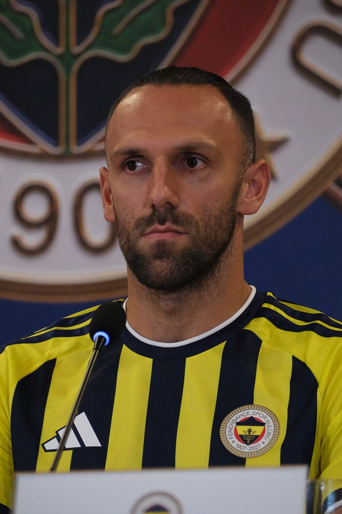

Kuyt's 'Miracle': Fenerbahçe Come From Behind Twice to Beat Liverpool 3-2
In only his second week as interim coach, the former Liverpool forward Dirk Kuyt watched Vedat Muriqi head the winner against his old club in Istanbul.

Football loves a script, and on Wednesday night in Istanbul it wrote a good one.
Dirk Kuyt spent six seasons at Liverpool, from 2006 to 2012, and played more than 200 games for the club. Last week he was named interim coach of Fenerbahçe after Ismail Kartal resigned. His first Champions League night in charge was against his old club, and he won it.
Behind twice, level twice, then ahead

Liverpool arrived having won all three of their Champions League games. They went ahead after 25 minutes when Trey Nyoni volleyed in a loose ball. Four minutes later Mason Greenwood equalised with a deflected free kick.
Midway through the second half Liverpool led again. Cody Gakpo crossed and Alexander Isak headed in from close range in the 69th minute. Fenerbahçe answered quickly: Archie Brown tapped in at the far post a few minutes later.
The winner came from a long throw. Brown headed it back across goal and Vedat Muriqi nodded in from close range in the 79th minute. Fenerbahçe held on for their first win of the campaign.
"I'm very happy with all the players and all the people who were involved in making a miracle tonight," Kuyt said.

What it means
The defeat drops Andoni Iraola's Liverpool to eighth on nine points, still in a good position but no longer perfect. Fenerbahçe climb to 19th on five points and back into the race for the play-off places.
Two of the five goals came from set pieces or long throws, and both decided the game in Fenerbahçe's favour: Greenwood's deflected free kick and Muriqi's winner from a long throw. For Liverpool, it was a lesson in how quickly a lead can disappear in Istanbul.
For Kuyt, the man who used to run through walls for Liverpool, it was a perfect start. He will know better than anyone that one night does not make a season.